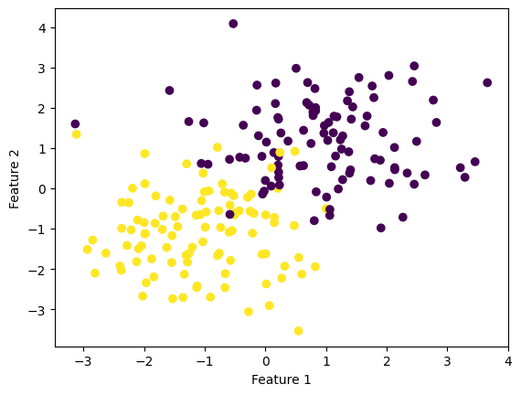
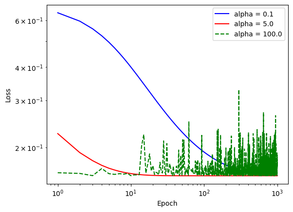
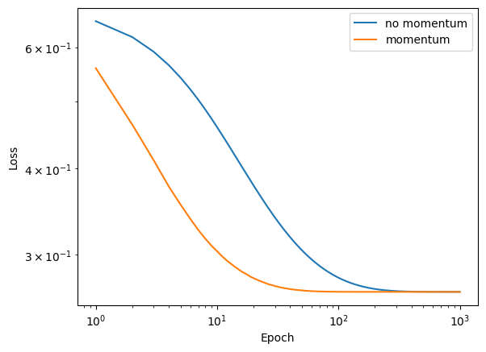

def fit(self, X, y, alpha=None, max_epochs=None):
n_samples, n_features = X.shape
self.w = np.random.rand(n_features+1)
self.loss_history = []
self.score_history = []
if alpha is not None:
self.alpha = alpha
if max_epochs is not None:
self.max_epochs = max_epochs
for _ in range(self.max_epochs):
j = np.random.randint(X.shape[0])
xi = np.append(X[j], 1)
y_hat = np.dot(xi, self.w)
yi = self.sigmoid(y_hat)
gradient = np.dot(self.sigmoid(y_hat) - y[j], xi) / n_samples
self.w -= self.alpha * gradient
accuracy = self.score(X, y)
self.loss_history.append(self.loss(yi, y))
self.score_history.append(accuracy)Link to Raw Algorithm Code
https://github.com/aymankhan2003/ayman-machinelearningblog.github.io/blob/main/posts/logistic/logistic.py
Fit Method
This method specifies how a logistic regression model is fitted. Three parameters are required by the method: X, y, and two optional ones, alpha and max epochs. The X parameter is a NumPy array of the shape (n samples, n features), where n samples is the dataset’s sample count and n features is the total number of features for all samples. The labels for each sample in the dataset are included in a NumPy array with shape (n samples), which is the y parameter. The learning rate is the alpha parameter. The gradient descent algorithm’s maximum number of epochs is indicated by the max_epochs parameter. To accommodate the bias term, a one is added to the weight vector. The method then repeats max epochs times with the following results for each iteration: - The sigmoid function is used to determine the predicted values for the present weights . - With the use of the loss function, it determines the gradients for the weights. - Using the gradients and learning rate, it updates the weights. - It keeps track of the accuracy and loss for this iteration. - The loss and accuracy histories are kept in self.loss history and self.score history, respectively, at the end of the method.
Fit Stochastic Method
def fit_stochastic(self, X, y, alpha=None, max_epochs=None, batch_size=None, momentum=False):
if alpha is not None:
self.alpha = alpha
if max_epochs is not None:
self.max_epochs = max_epochs
if batch_size is None:
batch_size = X.shape[0]
n_samples, n_features = X.shape
self.w = np.zeros(n_features)
self.loss_history = [] #initialize loss_history list
self.score_history = [] # initialize score_history list
beta = np.zeros_like(self.w) if momentum else 0
#beta = 0.8 if momentum else 0
for epoch in range(self.max_epochs):
order = np.arange(n_samples)
np.random.shuffle(order)
for batch in np.array_split(order, n_samples // batch_size + 1):
xi = X[batch,:]
yi = y[batch]
y_hat = np.dot(xi, self.w)
if momentum:
gradient = np.dot(self.sigmoid(y_hat) - yi, xi) / n_samples
beta = 0.8*beta + alpha * gradient
self.w -= beta
else:
gradient = np.dot(self.sigmoid(y_hat) - yi, xi) / n_samples
self.w -= alpha * gradient
y_hat = self.sigmoid(np.dot(X, self.w))
accuracy = self.score(X, y)
self.loss_history.append(self.loss(y_hat, y))
self.score_history.append(accuracy)
This method describes the stochastic gradient descent fit for a logistic regression model. The method requires five parameters: X, y, alpha, max epochs, and batch size. The fit method’s X and y parameters remain the same. The learning rate, or alpha parameter, regulates the gradient descent step size. The maximum number of epochs for the algorithm to run is specified by the max epochs option. The size of each mini-batch in the method is specified by the batch size parameter. To account for the bias term, the weight vector has a one added to it. Then, it adjusts the values of alpha, max epochs, and batch_size as necessary after verifying that they are supplied. A new score_history list is initialized along with the loss_history list to store the accuracy history for every epoch. The procedure initializes a new beta array with the same structure as the weights array if momentum is set to True. The use of momentum is controlled by the momentum parameter. The order of the samples is then randomly shuffled when the procedure repeats over each epoch. The samples are then divided into smaller batches of size batch_size. The method uses the sigmoid function to determine for each mini-batch the predicted values for the current weights. The loss function is then used to determine the gradients for the weights. If momentum is set to True, the method first updates the weights using the beta array before updating the beta array. Otherwise, it uses the gradients and the learning rate to directly update the weights. The approach determines the predicted values for all samples using the current weights after iterating over all of the mini-batches. Also, it computes this epoch’s accuracy and loss and adds them to the relevant histories. The loss and accuracy histories are kept in self.loss_history and self.score_history, respectively, at the end of the method.
from logistic import LogisticRegression
from sklearn.datasets import make_blobs
from matplotlib import pyplot as plt
import numpy as npp_features = 10
X, y = make_blobs(n_samples = 200, n_features = p_features, centers = [(1, 1), (-1, -1)])
LR = LogisticRegression()
LR.fit(X, y, alpha = 0.5, max_epochs=1000)
fig = plt.scatter(X[:,0], X[:,1], c = y)
xlab = plt.xlabel("Feature 1")
ylab = plt.ylabel("Feature 2")
plt.show()
The data above is synthetic data created using the make blobs portion where 10 dimension features is used which will later be used to analyse in one of the examples.
Example 1: A case in which gradient descent does not converge to a minimizer because the learning rate is too large.
LR.fit_stochastic(X, y, alpha = 0.1, max_epochs = 1000, batch_size = 10)
num_steps = len(LR.loss_history)
plt.plot(np.arange(num_steps) + 1, LR.loss_history, label = "alpha = 0.1", color = "blue")
LR_ = LogisticRegression()
LR_.fit_stochastic(X, y, alpha = 5.0, max_epochs = 1000, batch_size = 10)
num_steps = len(LR_.loss_history)
plt.plot(np.arange(num_steps) + 1, LR_.loss_history, label = "alpha = 5.0", color = "red")
LR_X = LogisticRegression()
LR_X.fit_stochastic(X, y, alpha = 100, max_epochs = 1000, batch_size = 10)
num_steps = len(LR_X.loss_history)
plt.plot(np.arange(num_steps) + 1, LR_X.loss_history, label = "alpha = 100.0", linestyle = "--", color = "green")
xlab = plt.xlabel("Epoch")
ylab = plt.ylabel("Loss")
plt.loglog()
legend = plt.legend()
This graph shows the line with moderately higher alpha/learning rate of 5 converges better, while an alpha/learning rate of 100 does not converge as it does not fit, while an alpha/learning rate of 0.1, takes time to converge.
Example 2: A case in which the choice of batch size influences how quickly the algorithm converges.
X, y = make_blobs(n_samples = 200, n_features = 5, centers = [(1, 1), (-1, -1)])
LR = LogisticRegression()
LR.fit_stochastic(X, y, alpha = 0.1, max_epochs = 1000, batch_size = 50)
num_steps = len(LR.loss_history)
plt.plot(np.arange(num_steps) + 1, LR.loss_history, label = "batch_size = 50", linestyle = "--", color = "blue")
LR_ = LogisticRegression()
LR_.fit_stochastic(X, y, alpha = 0.1, max_epochs = 1000, batch_size = 30)
num_steps = len(LR_.loss_history)
plt.plot(np.arange(num_steps) + 1, LR_.loss_history, label = "batch_size = 30", linestyle = "-", color = "yellow")
xlab = plt.xlabel("Epoch")
ylab = plt.ylabel("Loss")
plt.loglog()
legend = plt.legend()This graph shows the lower the batch-size is, the faster it converges, as a batch size of 30 converges faster than a batch size of 50.
Example 3: If you implemented momentum, a case in which the use of momentum significantly speeds up convergence.
X, y = make_blobs(n_samples = 200, n_features = 5, centers = [(-1, -1), (1, 1)])
LR = LogisticRegression()
LR.fit_stochastic(X, y, alpha = 0.1, max_epochs = 1000, batch_size = 10, momentum=False)
num_steps = len(LR.loss_history)
plt.plot(np.arange(num_steps) + 1, LR.loss_history, label = "no momentum")
LR_ = LogisticRegression()
LR_.fit_stochastic(X, y, alpha = 0.1, max_epochs = 1000, batch_size = 10, momentum=True)
num_steps = len(LR_.loss_history)
plt.plot(np.arange(num_steps) + 1, LR_.loss_history, label = "momentum")
xlab = plt.xlabel("Epoch")
ylab = plt.ylabel("Loss")
plt.loglog()
legend = plt.legend()
The graph clearly shows the orange line which states momentum converges faster than the blue line which indicates no momentum.
All Lines Together
X, y = make_blobs(n_samples = 200, n_features = 5, centers = [(-1, -1), (1, 1)])
#Standard gradient descent
LR = LogisticRegression()
LR.fit(X, y, alpha = 0.1, max_epochs = 1000)
num_steps = len(LR.loss_history)
plt.plot(np.arange(num_steps) + 1, LR.loss_history, label = "gradient", color = "skyblue")
#Stochastic gradient descent
LR1 = LogisticRegression()
LR1.fit_stochastic(X, y,
max_epochs = 1000,
momentum = False,
batch_size = 10,
alpha = 0.1)
num_steps = len(LR1.loss_history)
plt.plot(np.arange(num_steps) + 1, LR1.loss_history, label = "stochastic gradient", color = "purple")
#Stochastic gradient descent with momentum
LR2 = LogisticRegression()
LR2.fit_stochastic(X, y,
max_epochs = 1000,
momentum = True,
batch_size = 10,
alpha = 0.1)
num_steps = len(LR2.loss_history)
plt.plot(np.arange(num_steps) + 1, LR2.loss_history, label = "stochastic gradient (momentum)", color = "grey")
plt.loglog()
legend = plt.legend()